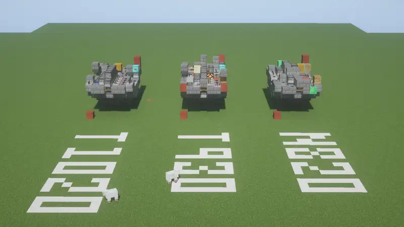

この記事はこれから始める方のためにこの界隈を簡潔に説明するものです。
「マインクラフト軍事部」と聞いて懐かしく感じた方もいるかもしれませんが、そんな方には今の界隈を知っていただいてノスタルジーに浸っていただきます。
そして、是非帰ってきてください。
いろいろありましたが、今となってはゆったりとした良い界隈になりました。
マインクラフト軍事部とは
ひとことで言えば、マインクラフトで作られる作品のカテゴリです。
おそらくニコニコ動画のタグが発祥ですので、起源の解説はあちらの大百科に譲ります。
dic.nicovideo.jp/a/minecraft軍事部現在は発表の場所をYoutubeとXに移しており、ニコニコ動画にはほとんど投稿されなくなってしまいました。
良く勘違いされるのですが、特定のグループを指す呼称ではありません。このカテゴリで活動するいくつかのグループが存在するのは事実ですが、そちらにはそちらの名前があります。
広義の軍事部と原理主義的軍事部
{kind=link}
作品の傾向
マインクラフト軍事部の定義は時代とともに変わりました。
私が活動を始める前、軍事部と言えばTNTキャノンを作って戦車や戦艦に搭載し、その作品をやたらとハイクオリティな動画で紹介する、という物でした。 今思えばこのイメージは後述のネコ三世の影響によるところが大きいです。
その後、Twitterを中心にTNTキャノンの有無に関わらず兵器を模した作品全体にマインクラフト軍事部とタグ付けされるようになり、次第にそちらの影響力が強まりました。
現在、TNTキャノンの関わりのあるマインクラフト軍事部作品はむしろ少数派です。
タグ付けについて
結局、タグは深く考えずに付けて構いません。
排他的雰囲気それほどなく、Twitterでは何かと分類付けをやりたがる方もおられましたが、タグの運用についての議論には及びませんでした。
画像に「今日も一日」と付けるような気持ちでこのタグを使えばよいのだと思います。
失敗しない、軍事部の始め方！
活動場所
多くの方がTwitterでの発言で失敗されていましたので、YouTubeでの活動をお勧めします。（笑）
と言っても今のXには好んで喧嘩を売るような方はおられませんのでおそらく心配する必要は無くなりました。
でも動画が作れるなら作った方が表現の幅は広がりますよ。実際、影響力のある軍事部クラフターは決まってYoutubeから現れました。後述の重要人物は皆Youtube出身です。ニコ動？見ていなかったので知りません。
Youtube、Xに次ぐ選択肢として、最初からグループに入って活動するという選択肢もあります。今どきはDiscordで活動しているグループが多いのではないでしょうか。募集はやはりX等でおこなわれています。
JEかBEか
どちらでも行けます。
ただし、TNTキャノンを使うならエディション間の互換性がないことに注意が必要です。また、JEでTNTキャノンを使う場合、Java版v1.7.10とHariboteAirCraftというMODの組み合わせで活動している方が多いです。
HariboteAirCraftの導入方法については拙ページもご参照ください。 はりぼてエアクラフトの導入と使い方と設定方法 - 中村のマインクラフト
造形作品なら本当にどちらでも行けます。
何万円のPCが必要か
ゲーミングとついている中で一番安い物で十分です。
ガジェット系配信者のいうことを鵜呑みにして高いモニターを買ったり、高いマウスを買ったりしないことも重要です。
私のPCはCore i5 6500、GTX 960です。
各時代の覇者
ネコ三世
私が活動を始める前、軍事部と言えばこの方が絶対王者でした。
戦車模擬戦界隈を発展させ、その研究開発の経過を面白おかしく解説したクオリティの高い動画で人気を博し、チャンネル登録者数は当時界隈で圧倒的最多の6千人に達しました。
動画外でも、サークルmcmとしてコミケに出店する等精力的に活動し、末期には視聴者参加型戦車模擬戦を開催しました。
一方、模擬戦の開催後は活動を鈍化させ、2018年ごろには実質引退状態となりました。
以下の動画は、当時の雰囲気を知るのに良いでしょう。
NavyEagle2000
ネコ三世と入れ替わりで頭角を現したのがこの方です。
TNTキャノン搭載の航空機を製作し、それを紹介する動画では前後の茶番シーンも人気になりました。
ネコ三世と異なり、動画外の活動をほとんどせず、その代わりに多数の動画を作成し、チャンネル登録者数は前人未踏の2万人に達しました。
一方、2022年ごろから突然、引退状態となりました。
以下の動画は、最も再生数の多い動画です。
ペングイーーん
軍事茶番の映像美を追求した新しい活動スタイルを開拓されています。
TNTキャノン搭載の戦艦を紹介する動画に非常に高いクオリティの茶番を組み合わせ、人気となりました。その後TNTキャノンを用いず、Blenderでレンダリングされた美麗な映像を追求しています。
以下の動画が茶番作品の代表作です。
お前はどうなんだよ
紺鷲氏とペングイーーん氏の中間の時代に全盛期を迎え、登録者数は1.3万人に達しました。
主にTNTキャノンを搭載した戦艦を製作していましたが、その制御回路ギミックに最も力を入れていました。
一方、動画内に茶番を入れることは無く、キレの悪いギャグをはじめ全体として面白みに欠けたので再生数は急速に衰退しました。
と過去形で紹介していますが、今も全力で活動しております。
具体的な作品例
具体的な作品例は、だいたいこの動画で解説されています。
MOD、造形、模擬戦戦車、回路艦、BE勢と多岐にわたる作品があり、全く組織化されていません。
最後に
この記事を読んで、あなたが帰ってきてくれる事を願っています。
界隈の汚点であったXも、今では平和になりました。
昔は喧嘩を売るのが好きな方が二・三名居り、新参の方の発言に難癖をつける形で炎上させていましたが、そんな彼らも三年と居座りませんでした。 今ではむしろ寂しいくらいです。
始めるなら、今しかありません。